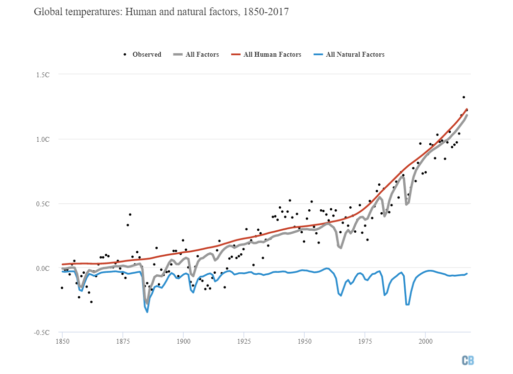
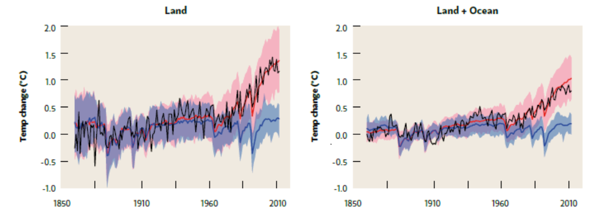
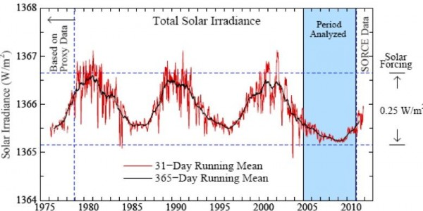
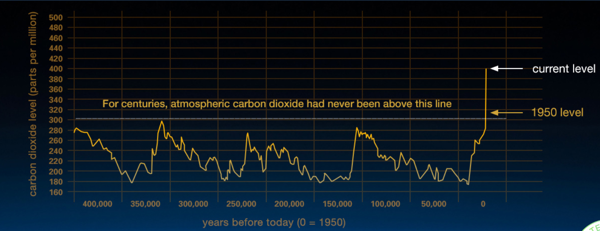
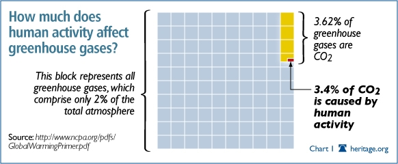
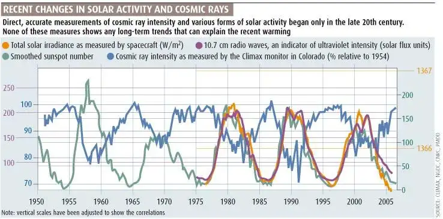

Self Study Project
2019-04-14
Part 1 Effective Visualization and Evaluation
Data visualization is the process of representing data graphically in order to identify trends and patterns that would otherwise be unclear or difficult to discern. Data visualization serves two purposes: to bring clarity during analysis and to communicate. Inappropriate visualization can lead to insights during analysis that would have remained hidden. Incorrect visualization leads to confusion, errors, and abandonment among viewers. Definition of data visualization relies on three criteria. Data visualization is
Representation based on qualitative or quantitative data, each of these data types requires unique approaches and methods of visualization to optimize the knowledge that they contain.
An image that is representative of the raw data, which requires to examine the data carefully to ensure that the breadth and scope of the visualization does not omit important information, does not over represent certain data, and that the visualization accurately reflects the information contained in the data.
Readable by viewers and supports exploration, examination, and communication of the Although these criteria may appear self-evident, in practice it takes thoughtful consideration and application to achieve them. (Azzam T 2013)
Below are a broad set of evaluation criteria put under a framework.
1.1 Evaluation Framework:
(Aragon 2017)
- Purpose of Visualization: It is important to determine whether the scope of the visualization is to inform or exploration.
- Intended Audience: Understand the likely audience.
- Visual transformation of data:
To examine if the visualization uses the visual components properly; that is to check if the data is properly represented using lines, color, position etc.
And to verify if it transforms nominal, interval and quantitative information properly.
Appropriate usage of labels and legends.
- Readability and Communication ability: These criteria enable to understand if the visualization is clear to viewers and helps exploration, examination, and presentation of the data. Involves
- Checking if the visualization is visually appealing/ aesthetically pleasing and immediately understandable.
- Visualization adds value over a textual or tabular representation of data.
- Verify if it provides insight or understanding better than some alternative visualization or it requires excessive cognitive effort and better approach existed.
- Performance of the visualization: To Learn if the visualization successfully highlights important information, while providing context for that information.
- Examine if the visualization reveals trends patterns, gaps and allows the viewer to make effective comparisons.
- Examine if the important information highlighted not hidden and to check if the visualization is transforming to mislead or helpfully simplified.
1.2 Different visualizations to represent climate change caused by human activity:
1.2.1 Visualization 1:
About the visualization : Global mean surface temperatures from Berkeley Earth (black dots) and modelled influence of all combined natural (blue line) and human (red line) radiative forcings with their respective uncertainties (shaded areas) for the period from 1850 to 2017. The combination of all natural and human forcings (grey line) is also shown.

Credit: Carbon Brief
Source :(HAUSFATHER 2017)
Purpose of Visualization: To depict Human forcings match observed warming.
Intended Audience: Assumed to be environmental activists and general public.
Visual transformation of data: The visualization incorporates different colors of lines to differentiate the various factors affecting the temperatures and different form (dots) to represent the observed temperatures. The usage of legends is appropriate.
Readability and Communication ability: The visualization is visually appealing and provides insights that human factors have the extreme effect on the increasing temperatures. The color selection of representing the Human effect being ‘Red’ is stressing the intent of the visualization.
Performance of the visualization: The visualization is clear and highlights the important information that warming associated with all human forcings agrees quite well with observed warming, and reveals the trend that uncertainties in human factors increase after 1960.
Overall the Visualization does a good job to convey its intent and is well addressed to any viewer with a minimal effort to understand that humans activities are the cause of the warming.
1.2.2 Visualization 2:
About the visualization: Comparison of observed changes (black lines) in global temperatures (°C) over land (left) and land plus ocean (right) with model projections including both natural plus human influences (red lines) and natural influences only (blue lines). Shadings around model results indicate 5-95% confidence bands.

Credit: Adapted from IPCC (2013), Fifth Assessment Report Source : (Science 2013)
Purpose of Visualization: To depict climate models against observations and also to demonstrate that recent observed global warming is resulted largely from human rather than natural influences on climate. Intended Audience: Assumed to be environmental activists and general public.
Visual transformation of data: The visualization incorporates different colors to depict different influences on temperature. The legends and labels are apt.
Readability and Communication ability: Although this visualization is successful to show the significance of human influence, the shading around the lines to indicate 5-95% confidence bands is visually distractive. The incorporation of the shading doesn’t provide any insight and hence seem unnecessary. Also in contrast, the first visualization which similarly represents the observed warming in a different form (dots) does a better impact to the viewer than this black line here.
Performance of the visualization: The visualization requires a little effort to track the different lines and learn the influences because of the overlapping of lines and the shadings. However, the visualization is successful to depict that humans are the major contributors to the warming.
Overall although the visualization attempts to well represent its intent , it possess some distractive effects to viewers in contrast to the first visualization.
1.2.3 Visualization 3:
About Visualization: In recent years solar irradiance dipped to the lowest levels recorded during the satellite era. This visualization intends to provides unequivocal evidence that the sun is not the dominant driver of global warming instead it is caused by humans.

Credit : Credit: NASA/James Hansen
Source : (Staff 2012)
Purpose of Visualization: To demonstrate that In recent years solar irradiance dipped to the lowest levels Intended Audience: Assumed to be environmental activists and general public.
Visual transformation of data: The visualization incorporates different colors and forms to represent different measures of solar irradiance. The legends and labels are well used. The analyzed period is highlighted to seek attention.
Readability and Communication ability: This visualization clearly shows the decrease in solar irradiance in recent years. The visualization depicts too much information to the viewer. It looks overwhelming and hard to understand what the visualization is attempting to convey.
Performance of the visualization: The visualization requires effort to gain the hidden insights that human activity is the underlying cause for the warming. The audience is expected to have some scientific knowledge about solar irradiance and its impact on the climate. However, the visualization is successful to depict the drop of solar irradiance but seems hard for analyzation.
1.2.4 Visualization 4:
About Visualization: This graph, based on the comparison of atmospheric samples contained in ice cores and more recent direct measurements, provides evidence that atmospheric CO2 has increased since the Industrial Revolution.

Credit: Vostok ice core data/J.R. Petit et al.; NOAA Mauna Loa CO2 record.
Source:(Change 2019)
Purpose of Visualization: To represent current warming trend is of particular significance because most of it is extremely likely to be the result of human activity since the mid-20th century and proceeding at a rate that is unprecedented over decades to millennia. Intended Audience: Assumed to be environmental activists and general public.
Visual transformation of data: The visualization incorporates highlighting combination of a light color line over a dark background to represent the carbon dioxide level. The legends and labels are well used. The current level is highlighted to seek attention. Readability and Communication ability: This visualization clearly shows the steep increase in carbon dioxide since 1950. The visualization provides sufficient textual information to the viewer. Visualization does add value over a textual or tabular representation of data of a long time period.
Performance of the visualization: The visualization requires the viewer to draw insights from the visualization that human activity such as industrialization is the causing factor for the increase in CO2. The visualization is successful to depict the drastic increase of carbon dioxide levels and easily trace the human influence behind the impact.
Visualizations against human influence
1.2.5 Visualization 5:
About the visualization: Out of the entire atmospheric makeup, only one to two percent is made up of greenhouse gases with the majority being nitrogen (about 78 percent) and oxygen (about 21 percent). Of that two percent, “planet-killing” carbon dioxide comprises only 3.62 percent while water vapor encompasses 95 percent. And of the amount of carbon dioxide in the atmosphere, humans cause only 3.4 percent of annual CO2 emissions

Credit: Heritage.Org
Source: (Loris 2009)
Purpose of Visualization: To represent CO2 produced by human activity has insignificant contribution to green house effect. Intended Audience: Assumed to be environmental activists and general public.
Visual transformation of data: The visualization incorporates matrix chart and different colors to differentiate different contributions. The use of red color is highlighting the insignificance of the human contribution. There is sufficient textual information provided to convey the insights.
Readability and Communication ability: This visualization clearly argues that the humans are negligible source for the greenhouse gases. This visualization provides understanding better than some alternative visualizations like pie chart or bar charts.
Performance of the visualization: The visualization represents only 2% of the total atmosphere and expects the viewer to imagine the big picture which seems to reduce the capacity of the visualization to represent the strong intent. Also the percentages of overall CO2 (3.62% of green house gases) and human contribution (3.4% of CO2) seem hard for viewers to link it with the visualization .Although the visualization is impactful to depict the negligible impact of carbon dioxide from human activity , it requires cognitive effort by viewers to gauze the entire big picture of total atmosphere.
Overall the visualization could have been better if the percentages in text were avoided.
1.2.6 Visualization 6:
About the Visualization: Represents recent changes in solar activity and Cosmic rays.

Source :(Pearce 2007)
Purpose of Visualization: To demonstrate global warming is caused by Sun. Intended Audience: Assumed to be environmental activists and general public.
Visual transformation of data: The visualization incorporates only different colors to differentiate various solar activities and extends the color coding the respective scales. The representation of multiple scales makes the visualization complex.
Readability and Communication ability: The visualization represents recent changes in solar activity and Cosmic rays. But it is not easy to draw conclusions or insights directly from the visualization, it requires the viewer to possess knowledge of solar activities.
Performance of the visualization: Although the visualization allows the viewer to make effective comparisons of different solar activities. It requires cognitive effort by viewer to draw conclusions.
1.3 Conclusion:
On learning the purpose of visual representation of data and developing an evaluation frame work it can be emphasized that effectiveness of a visualization relies on the choice of the data representation and accuracy in conveying the intended information without omitting or over representing the data. Most importantly visualization should incorporate ease of readability, engaging and enlightening.
Evaluation of different visualizations to demonstrate human contributions to the changing climate helped to analyze the strengths and weakness associated with a visualization. It can be inferred that just the colorfulness or amount of information don’t turn the visualization effective. If the visualization doesn’t add value by highlighting the hidden information, patterns or trends that could not be inferred from its raw representation to its viewer it has failed to accomplish its primary objective of helping to turn data into knowledge.
References
Azzam T, Kistler S J, Evergreen S. 2013. “Data Visualization and Evaluation.” https://dmlcommons.net/wp-content/uploads /2015/12/data_visualization_evaluation.pdf.
Aragon, Cecillia. 2017. “How to Evaluate a Visualisation[Video File].” https://www.coursera.org/lecture/data-results/14-evaluating-visualizations-IBuU3.
HAUSFATHER, ZEKE. 2017. “Analysis: Why Scientists Think 100.” https://www.carbonbrief.org/analysis-why-scientists-think-100-of-global-warming-is-due-to-humans.
Science, Australian Academy of. 2013. “3. Are Human Activities Causing Climate Change?” https://www.science.org.au/learning/general-audience/science-booklets-0/science-climate-change/3-are-human-activities-causing.
Staff, RTCC. 2012. “NASA: Human Activity Cause of Climate Change.” https://www.climatechangenews.com/2012/02/01/nasa-humans-not-sun-changing-earths-temperature/.
Change, NASA Global Climate. 2019. “Climate Change: How Do We Know?” https://climate.nasa.gov/evidence/?text=Larger.
Loris, Nicolas. 2009. “Man’s Contribution to Global Warming.” https://www.dailysignal.com/2009/03/27/man%E2%80%99s-contribution-to-global-warming/.
Pearce, Fred. 2007. “Climate Myths: Global Warming Is down to the Sun, Not Humans.” https://www.newscientist.com/article/dn11650-climate-myths-global-warming-is-down-to-the-sun-not-humans/.